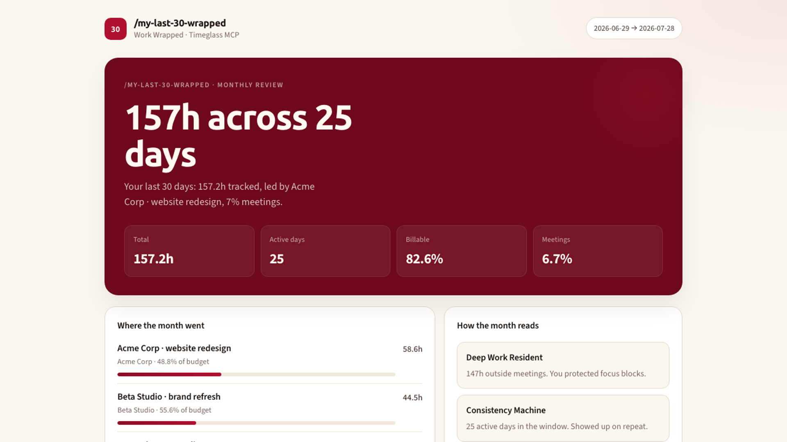
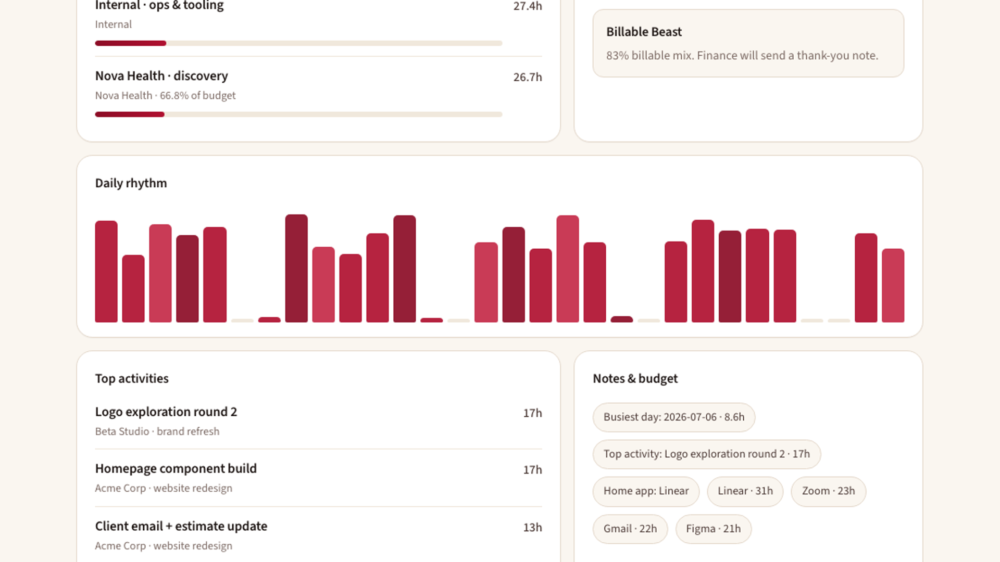
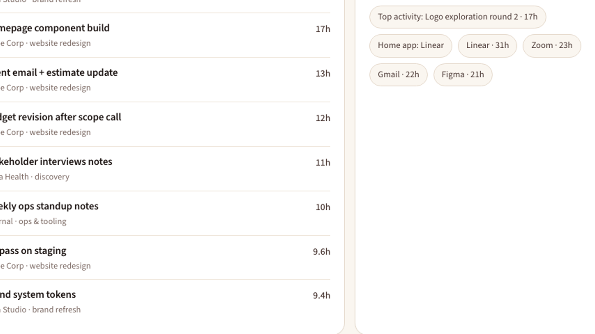
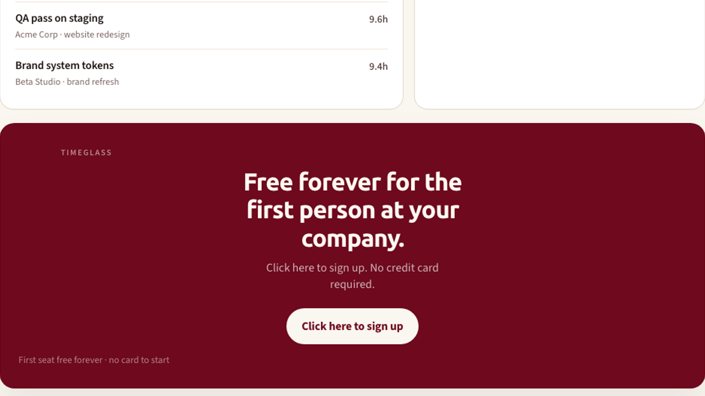

/my-last-30-wrapped
From Timeglass MCP · no scraping · last 30 days





TimeglassClick here to sign up. No credit card required.
For the first person at your company · free forever · no credit card required